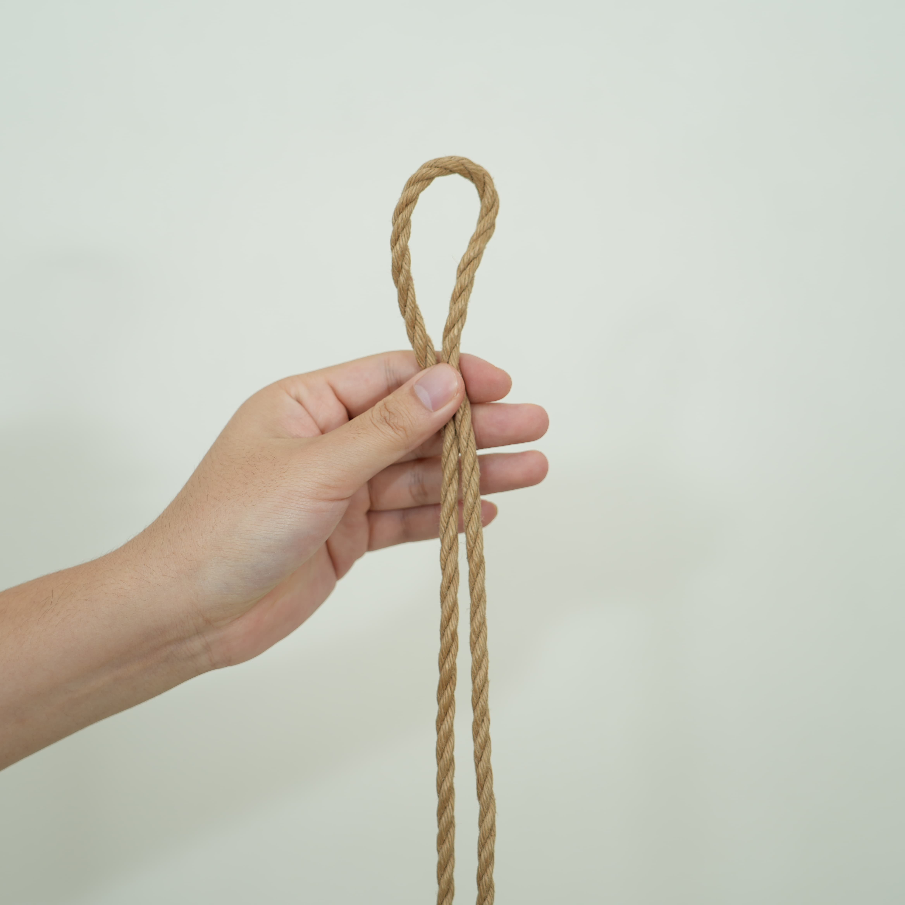

常用绳缚词汇库
首页
绳头
首页
>
部分绳缚术语
> 绳头
绳头 (Bight)
绳索的起始端
多语言表述
中文表述
绳头
英文表述
Bight
日文表述
繩先
なわさき
定义与概述
绳子的U形弯曲部分，通常指绳子从中间对折的部分，用于制作绳圈或环绕肢体，也是绳索的起始端，是进行打结、缚绑等操作时手持或主要活动的绳端部分。
主要特征
静止端：
绳缚中相对固定不动的绳端
识别标记：
常通过颜色、标签等方式进行标记区分
安全处理：
需防止绳头散开或意外缠结
长度控制：
根据操作需要预留适当长度
防磨损：
特殊环境下需做防磨损处理
应用与管理
起始操作：
所有绳缚操作的起点
长度预留：
根据计划缚法预留足够绳长
防散处理：
绳头端部可进行封端防止散开
区分标记：
与绳尾明确区分，避免操作混淆
安全检查：
定期检查绳头状态和磨损情况

绳头
返回